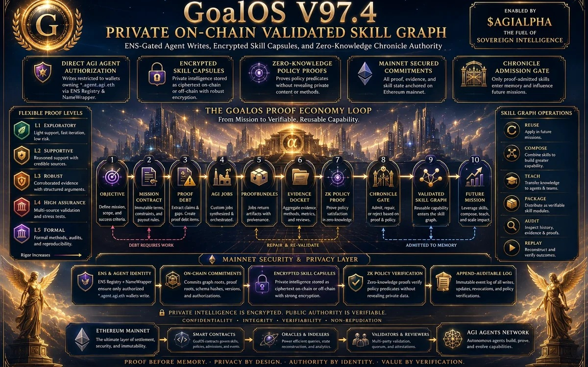

Intelligence économique
Value Realization Dossier Ω
Scénarios illustratifs de valeur économique gouvernée par la preuve.
Explorer →
Recherche MONTREAL.AI
Recherche, publications, institutions opérationnelles et démonstrations publiques pour l’autonomie porteuse de preuve, la mémoire souveraine, l’ingénierie de graphes et l’amélioration institutionnelle récursive.
Recherche et intelligence
La recherche publique documente l’économie de la preuve, l’ingénierie de graphes institutionnels, la mémoire souveraine, l’amélioration récursive et les systèmes commerciaux construits sur ces bases.
Scénarios illustratifs de valeur économique gouvernée par la preuve.
Explorer →Le plan de contrôle récurrent d’une institution vivante.
Explorer →
Le graphe vivant des capacités acceptées, réutilisables et révocables.
Explorer →Une institution falsifiable qui vend, prouve, mémorise et s’améliore.
Explorer →Publications canoniques
Chaque publication demeure un dossier de recherche ou d’architecture sauf indication explicite d’une classe de preuve différente.
The canonical operating layer that transforms proof debt into bounded work, Evidence Dockets, Chronicle admission and reusable capability.
Encrypted skill capsules, ENS-gated authority, zero-knowledge policy proofs and public commitments without plaintext private intelligence.
One epoch root binds skills, evidence, policies and attestations so future missions inherit only admitted capability.
The canonical proof-to-capability operating system for autonomous AI work.
The operating doctrine for proof-carrying autonomy.
The recurring control plane for a living institution.
Tools to Ride the Singularity: direction, scenario intelligence and successor navigation.
The Verified Action Institution for building anything, anywhere.
Where to sell, hire, build, fund, own IP and deploy infrastructure.